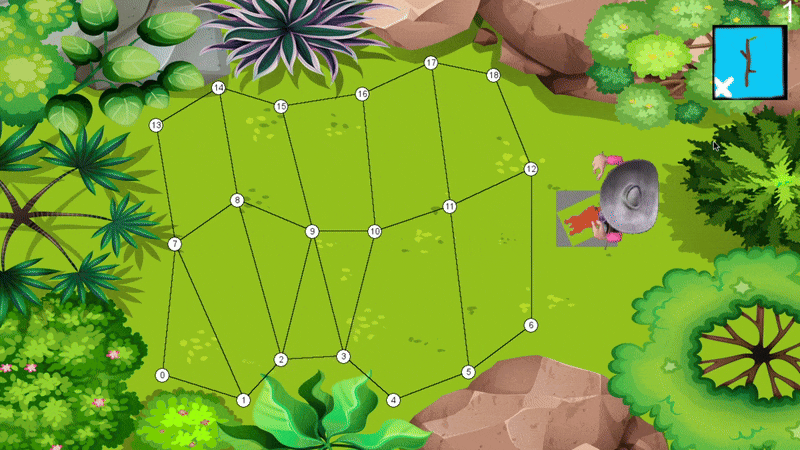

Link: Project Link
What I did: Gameplay programming, UI design
Platform: PC
Engine and Tools: C++, In-house university engine
Time on Project: 2 weeks
Link: Project Link
What I did: Gameplay programming, UI design
Platform: PC
Engine and Tools: C++, In-house university engine
Time on Project: 2 weeks
This project uses Dijkstra’s algorithm to let a dog intelligently fetch a stick and return to the player.
The world is mapped as a graph of nodes, and the dog calculates the shortest route to the stick and back using real-time pathfinding based on its and the target's positions. A simple flag system switches its behavior between chasing and returning.
The objective/plot of the game is to exercise your virtual pet (dog) by throwing sticks for him to chase and return to you (player). Each time the dog returns the stick to you, it increases your score.
